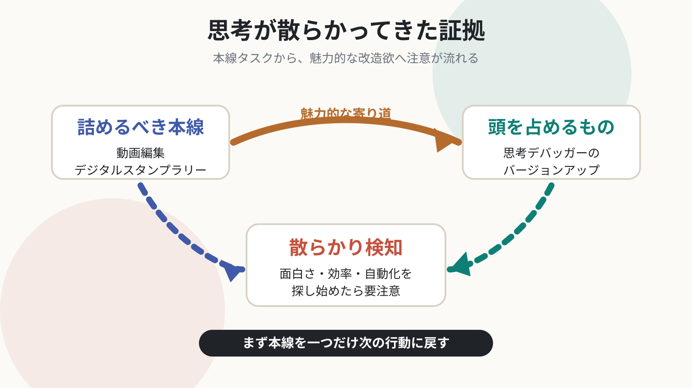

Introspection Debug Log / 2026-06-10
本線タスクより思考デバッガー改造が気になる
動画編集やデジタルスタンプラリーなど、詰めなきゃいけないことがあるのに、思考デバッガーのバージョンアップが頭を占める。より面白く、効率良く、オートメーションでオリジナリティがあるアプリケーションを探そうとしている。思考が散らかってきた証拠だ。
思考のデバッガーからの突っ込み
これはかなり正確な自己観察です。ただし「思考が散らかってきた」で終わらせると、少しだけ観察者ポジションに逃げられます。散らかりを見抜いた自分、ちょっとかっこいい。はい、そこにも小さな報酬があります。
天邪鬼に見るなら、思考デバッガー改造は単なる逃避ではなく、本線タスクを楽しく処理するための環境整備欲でもあります。ただし、環境整備が本線を食べ始めたら主従逆転です。包丁を研ぎ続けて、夕飯が出ないやつです。
一段深掘りする問い
いま本当に欲しいのは、思考デバッガーの進化ですか、それとも動画編集やWeb3開発に戻るための着手の摩擦を下げる仕組みですか？
感情の起伏
本線
動画編集やデジタルスタンプラリーなど、詰めるべきタスクがある。
逸れ
より面白く効率的な思考デバッガーの改造案に注意が吸われている。
検知
これは創造性でもあるが、思考が散らかり始めたサインでもある。
戻す
まず本線タスクを一つだけ、次の具体行動に戻すのがよさそう。
メモ: 改造欲は悪者ではない。ただし、今日の本線を進める燃料にならない改造は、いったん駐車場へ。
他者紹介用メモ
やるべき作業があるのに、つい仕組みの改造や新しいアプリ探しに意識が向いてしまう。そんなとき、それは逃避なのか、環境整備なのか。創造性を否定せず、本線に戻るための見極め方を一緒に考える内容です。
図解
